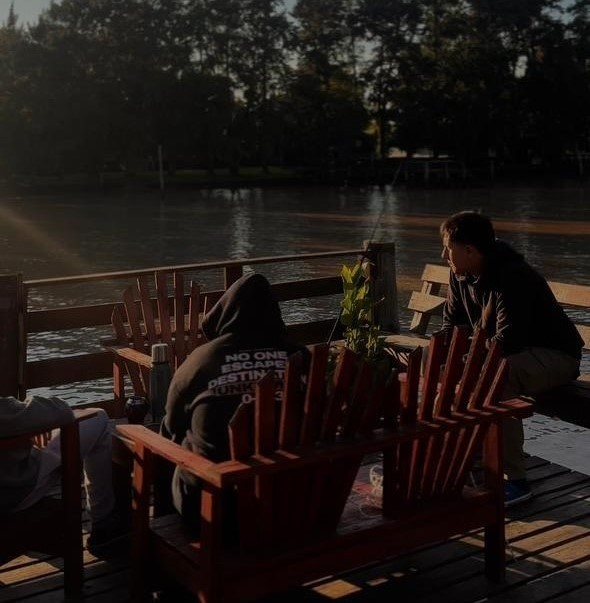
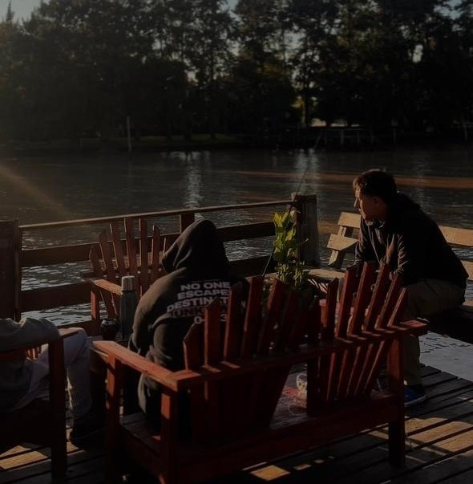

Habitacion matrimonial y una cama cucheta
La cabaña cuenta con una acogedora habitación matrimonial diseñada para ofrecerte un buen descanso. El amplio y luminoso living-comedor está equipado con una cama cucheta, ideal para familias o grupo de amigos que deseen disfrutar la estancia juntos.

Baño y Living-Comedor
El baño dispone de agua caliente las 24hs, está completamente equipado con lo necesario para que te sientas como en casa.La cocina integrada al living-comedor incluye anafe con gas, heladera con freezer, vajilla completa y todo lo necesario para que puedas preparar tus comidas. También cuenta con ventilador y aire acondicionado.

Balcon-deck y Muelle
Nuestra cabaña también dispone de un balcón amplio para que puedas relajarte en caso que no acudas al muelle. Equipado con mesa y 4 reposeras de maderas. Por la noche se ilumina con luces calida ideal para comer o tomar algo al aire libre. Nuestro muelle no es techado, pero cuenta con resposeras y bancos fijos para disfrutar el aire libre, pescar o simplemente disfrutar de la hermosa vista.
 

Servicios Generales
Aire acondicionado, Wi-fi gratis, Cama cucheta, Una habitación matrimonial, Ropa de cama,Smart Tv,Sofá, Vajilla, Cocina, Balcón deck, Muelle privado, y Parrilla privada.
Nunca fué tan facil desconectarte
¡Te esperamos para que conozcas la magia de nuestro complejo!